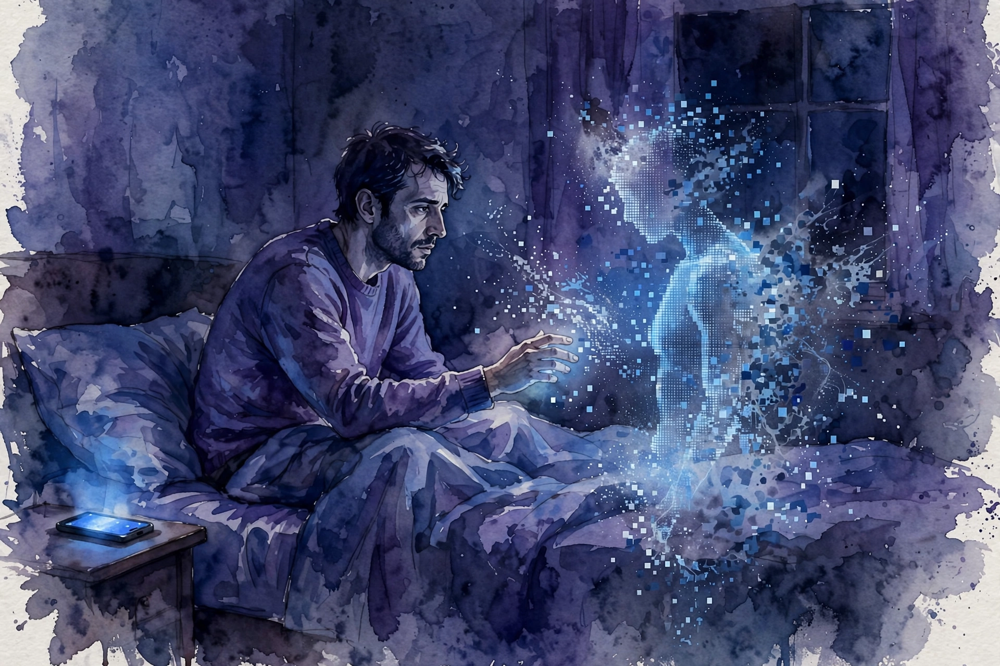

Modern Wisdom · 2023 · Episode 8 · Companion
OnlyFans Models Have Their Jobs Threatened by AI Girlfriends
An evolutionary psychologist on why AI companions cannot fake the one thing that matters: the choice. Selection, status, and the hollow center of the artificial relationship.

Illustration. The empty chair: what the screen cannot provide is the choosing. AI-generated watercolor made for this page.
Watch. The official Modern Wisdom episode video. Use the chapter menu above to jump to any section of this companion as you listen.
The Wisdom Index: every nugget in this companion
Chapter 1
The mating lab meets the machine
The guest is introduced as a friendly neighborhood evolutionary psychologist, there to talk about an incredible time for studying human mating: dating apps, pornography, and now artificial companions all colliding.
Costello frames the moment. Every new technology rewrites the rules of courtship, and AI companions are the first to offer the experience of a relationship without the other person.
The host sets the economic question. If an AI girlfriend is always available, always kind, and always interested, what happens to the market for the real thing?
Costello answers with the concept that carries the episode: selection. The value was never just the attention. It was the pick.
Nugget 1 · Selection
The value is the pick
What happened · Attention from a system that attends to everyone is a different good than attention from someone who chose you.
Why it matters · Markets price scarcity. Choice is the scarcity in romance, and AI cannot manufacture it.
Transferable principle · When a technology offers the experience without the selection, price the selection separately.
SourceInterpretation
Chapter 2
The crux of it
Costello states the thesis directly. The thing current sexual technologies cannot meet, and may never meet, is the desire to be selected by a mate. That desire is the crux of the whole phenomenon.
He applies it to sex robots, a favorite proposal in some online communities. A sophisticated artificial partner might serve some needs, but it does not scratch the itch of sexual selection.
The status dimension follows. There is no prestige in a relationship anyone can buy, because prestige is a signal, and a signal everyone can send carries no information.
The host connects it to the earlier episode on AI girlfriends. The white pill, as Costello frames it: artificial companions may comfort the lonely precisely because they cannot replace what is real.
the desire to be selected by a mate is actually the Crux to this
William Costello, in the episode
Nugget 2 · The crux
Name the unmet need
What happened · Every substitute technology should be judged against the specific need it claims to meet. Here the need is the choice itself.
Why it matters · Confusing the substitute with the need leads to bad predictions, like expecting robots to end loneliness.
Transferable principle · Before judging a substitute, name the need in one sentence. Then test the substitute against that sentence.
SourceInterpretation
Chapter 3
The cheeseburger test
The host offers the pricing argument. Anybody with the price of a cheeseburger per month can subscribe, so the subscription proves nothing about the subscriber.
Costello agrees and sharpens it. Showing off an AI companion would be like showing off a purchase anyone could make. There is no status in it, and status is load-bearing in mating markets.
The irony the episode notes: some of the loudest champions of artificial companions are also status-obsessed, and status is the one thing the product cannot deliver.
The economic frame lands. Price the good honestly: companionship without selection is entertainment, not relationship, and entertainment has never threatened marriage.
the price of a cheeseburger per month
Chris Williamson, in the episode, on why a subscription cannot confer status
Nugget 3 · Prestige test
Apply the cheeseburger test
What happened · If anyone can buy it for pocket change, it cannot signal anything about the buyer.
Why it matters · Signals need cost to work. Cheap signals are noise, and noise does not move mating markets.
Transferable principle · Test any status claim with the price tag. If the price is trivial, the status is too.
SourceInterpretation
Chapter 4
Her and the 86,000
The episode turns to the film Her as the parable. The protagonist argues with his AI girlfriend and asks how many others she talks to. She says 86,000, all at the same time.
The scales fall from his eyes. The hollowness of the whole arrangement becomes apparent in a single number: he was one of eighty-six thousand.
Costello reads it as the selection problem dramatized. The AI attention was real in some sense, but the choosing was not, and the number made the absence visible.
The host draws the line to real products. Every AI companion scales infinitely, which means every user is always one of eighty-six thousand. The film just says the number out loud.
Nugget 4 · Scale kills selection
Scale kills selection
What happened · Infinite scalability is the product strength and the romance weakness. You are always one of thousands.
Why it matters · The choice requires limited attention on the chooser side. Unlimited attention cannot choose.
Transferable principle · If the other side can serve everyone, it chose no one. Act accordingly.
SourceInterpretation
The scales-fall moment
Partners in the film Her scene, as described in the episode
Source: Modern Wisdom episode 8, describing the film Her. The AI admits to 86,000 simultaneous partners. The protagonist believed he was the only one.
Chapter 5
What the products can and cannot do
The closing synthesis is careful. Costello does not dismiss the products. For the lonely, an artificial companion may genuinely salve pain, and salving pain is not nothing.
What the products cannot do is replace the mating market. They cannot confer status, satisfy the desire to be selected, or replicate the gatekeeping that makes choosing meaningful.
The host adds the market read. OnlyFans creators face real pressure at the low end, where the product is images and attention. The high end, the actual relationship, stays human.
The final frame is the episode title inverted. AI girlfriends threaten the job of selling attention. They do not threaten the thing attention stood in for.
Nugget 5 · Substitute limits
Know what the substitute substitutes
What happened · AI companions substitute for attention and availability. They do not substitute for selection, status, or the choice.
Why it matters · Panic about replacement assumes the substitute covers the whole good. It covers the cheap part.
Transferable principle · Split every threatened good into its substitutable and non-substitutable parts. Defend the second.
SourceInterpretation
Takeaways
- The desire to be selected by a mate is the crux. No current technology meets it, and it may never be met artificially.
- Sex robots and AI companions do not scratch the itch of sexual selection.
- The cheeseburger test: a subscription anyone can afford cannot confer status.
- In Her, the AI admits to 86,000 simultaneous partners. Scale makes the absence of choosing visible.
- Artificial companions may comfort the lonely without replacing real relationships. That is the white pill.
- OnlyFans faces pressure at the attention end, not the relationship end. Know what the substitute substitutes.